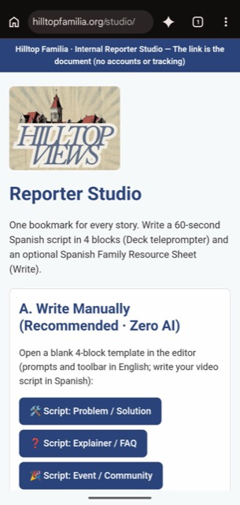
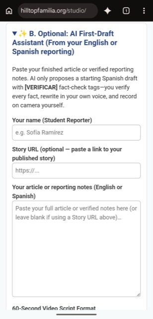
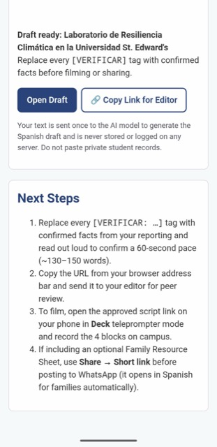
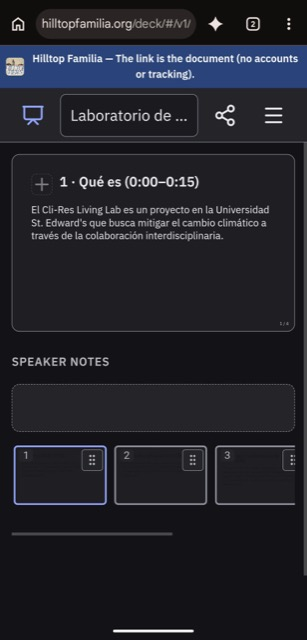

MVP and prototype
The minimum viable product
Hilltop Familia launches as a low-overhead Spanish-language video and civic information channel produced by student journalists and delivered to families on WhatsApp.
Purpose
What the MVP tests
Demand
Will Spanish-speaking families join and stay in a WhatsApp Community for campus and Austin news? Target: 200 active members by month six.
Value
Do families open and watch the videos? Target: a 25% average open/read rate on the pilot content.
Feasibility
Can student reporters produce a verified Spanish video in under 35 minutes? The pilot is 6 pieces of content.
Strategic pillars
How the MVP is built
Lightweight, serverless technology
Runs on a branded fork of the open-source TinyLittleOffice framework, where the link is the document. Scripts and family guides are encoded in the URL, so no content management system or database is required.
Near-zero operating costs
No database hosting, user subscriptions or enterprise licenses. Videos are delivered through WhatsApp, where families already communicate.
English for reporters, Spanish for families
Student reporters work in an English-language studio while writing Spanish scripts. Families always see a fully Spanish interface.
Video paired with civic guides
Each 60-second vertical video, filmed by the student who reported it, can include a companion family resource link with a bilingual glossary, deadlines, contacts and a checklist.
Privacy by design
Families never log in or register. There are no cookies, no tracking and no server-side logging of reading habits.
Guardrails
MVP standards at a glance
| Editorial voice | 100% student-reported and student-presented on camera. No AI voiceovers or synthetic video. |
|---|---|
| Language | English interface for reporters; Spanish content and interface for families. |
| AI role | Strictly optional. Used only to draft a first Spanish script or resource sheet from a reporter’s own reporting. Every fact is verified by the reporter. |
| Distribution | Native vertical video plus an optional encrypted short link, delivered through a WhatsApp Community. |
| Infrastructure | TinyLittleOffice fork hosted on Cloudflare Workers at hilltopfamilia.org, with no database maintenance. |
| Audience privacy | No accounts, cookies, share buttons or server-side tracking. |
Prototype
The reporter studio and 4-block video format
Reporters use a phone-friendly studio to write a four-block, 60-second Spanish script, then film from the same script used as a teleprompter.




Block structure by story format
Block titles appear in Spanish, as families see them.
| Block | A · Problema/Solución | B · Explicador/FAQ | C · Evento/Comunidad |
|---|---|---|---|
| 1 · 0:00–0:15 | El problema | La pregunta | Qué es |
| 2 · 0:15–0:30 | Por qué importa | La respuesta corta | Cuándo y dónde |
| 3 · 0:30–0:50 | La solución y sus límites | Lo que hay que saber | Por qué ir y cuánto cuesta |
| 4 · 0:50–1:05 | Siguiente paso | Dónde pedir ayuda | Cómo participar |
Workflow
From finished story to WhatsApp in under 35 minutes
- 5–10 minStart script. The reporter opens the studio, picks a template and writes four Spanish blocks.
- 5 minFamily resource sheet (optional). The reporter creates a takeaway guide if the story needs one.
- 5–10 minSelf-edit and fact-check. The reporter reads aloud for a 60-second pace and verifies all dates, amounts and terms. Any AI draft must be fully verified.
- 5 minPeer edit. A bilingual editor reviews the script and guide.
- 12 minFilm and caption. The reporter uses the script as a mobile teleprompter, records and adds Spanish captions.
- 3 minWhatsApp delivery. The editor posts the video with headline, byline and optional guide link.
Roadmap
Four-week launch schedule
Week 1
Fork, brand and studio setup
Fork the framework, configure the language split and brand, build the reporter studio and deploy hilltopfamilia.org.
Week 2
WhatsApp channel and pilot cohort
Set up the WhatsApp Community, recruit 3–4 bilingual student journalists and run a 45-minute training.
Week 3
Pilot production
Produce 3 pilot videos, one per format, and test companion links on iOS and Android.
Week 4
Soft launch to families
Distribute the join code through HSA, First-Gen groups, Financial Aid and community partners. Publish 2 videos per week, reaching the pilot total of 6 pieces by the end of week 5.
Measurement
Measuring impact without invading privacy
WhatsApp engagement
Member growth, emoji reactions on videos and questions submitted in the community thread.
Zero-log short links
Short links store only encrypted text, never the decryption key, and expire automatically.
Reporter turnaround
Time from finished story to recorded video, with a target under 35 minutes.
Risks
Risks and mitigations
| Risk | Mitigation |
|---|---|
| Factual or translation errors in Spanish content | Mandatory [VERIFICAR] tags, reporter fact-check and a bilingual peer edit before publishing. |
| Families do not join the WhatsApp Community | Distribute the join code through HSA, First-Gen groups, Financial Aid and orientation events; track member growth weekly. |
| Reporter capacity and turnover | Templates, a 45-minute training and a turnaround target under 35 minutes per video. |
| Limited analytics because of the privacy-first design | Use WhatsApp reactions, member growth, community questions and the 50-family baseline survey. |